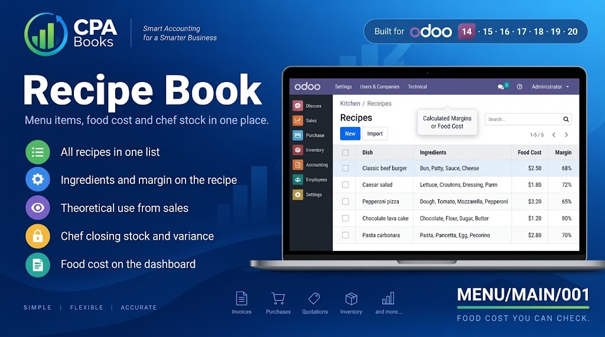
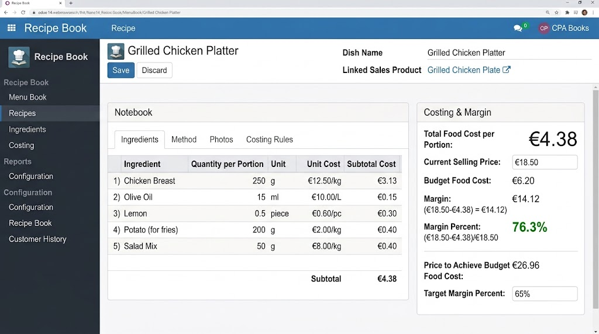
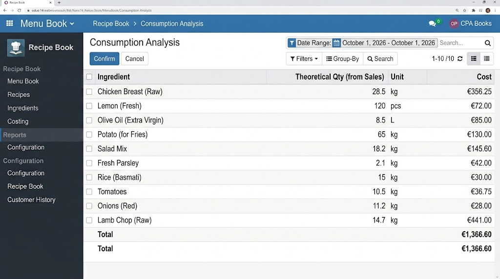
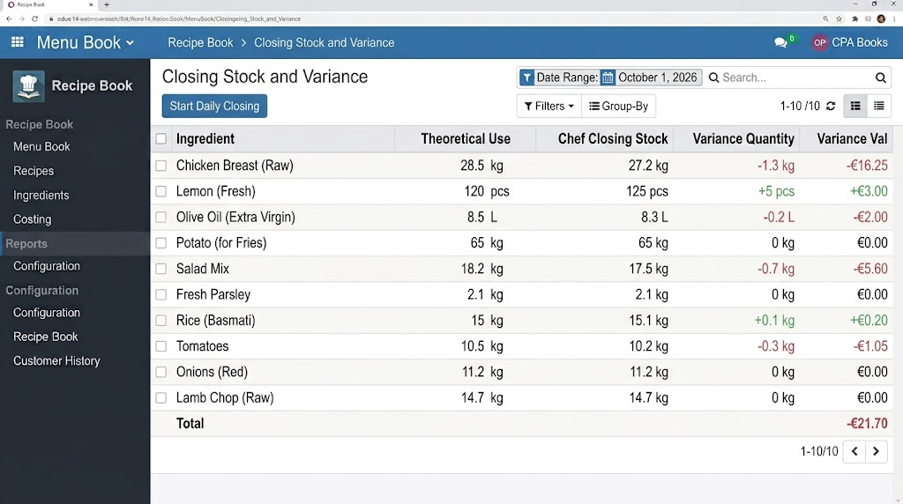
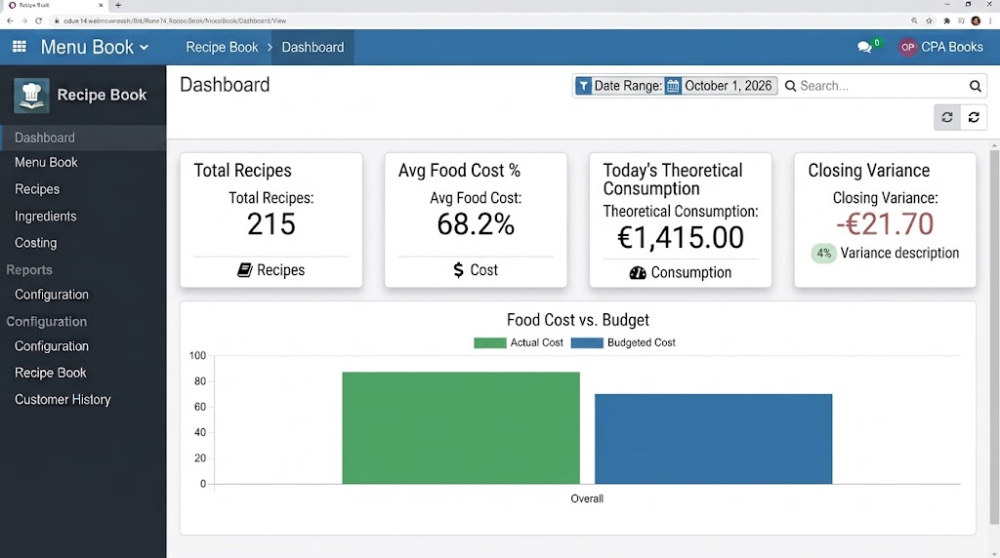

Link each menu item to a sales product, store ingredients per portion, and see theoretical use against the chef's closing stock.
Menu Book shows each dish, its sales product, portions, food cost, selling price and margin.

Open a dish to see ingredients per portion, food cost, selling price and margin.

Consumption Analysis turns confirmed sales into the ingredients the kitchen should have used.

Compare theoretical use with the chef's closing stock and see the quantity and value gap.

Dashboard shows recipe count, average food cost, today's theoretical consumption and closing variance.

Spreadsheets drift away from the sales orders already in Odoo. Recipe Book builds food cost and theoretical consumption from those same books.
Daily controls for a restaurant kitchen.
One recipe per menu item, with ingredients stored per portion.
Compare budget food cost with the current recipe cost, selling price and margin.
Batch yield and unit cost for items prepared before they go on a plate.
Ingredient use is calculated from confirmed sales orders.
Enter the chef's closing stock and see the gap against theoretical use.
Load sample recipes, then clone them into live recipes.
Attach ingredients to the menu product, per portion.
Confirmed sales build theoretical ingredient consumption.
Compare chef stock with theoretical use and review the dashboard.
Restaurants and cloud kitchens that already sell in Odoo and need food-cost control without a separate spreadsheet.